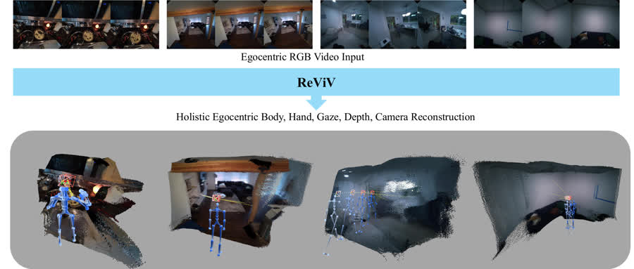

ReViV: Reconstructing the Viewer and the View in 4D from Monocular Egocentric Video
European Conference on Computer Vision (ECCV), 2026 (*equal contribution)
Paper / Project Page / Code
ReViV reconstructs viewer-centric human motion (body, hand, and gaze) and view-centric scene geometry (camera and depth) from a single egocentric RGB video in a unified feed-forward model.